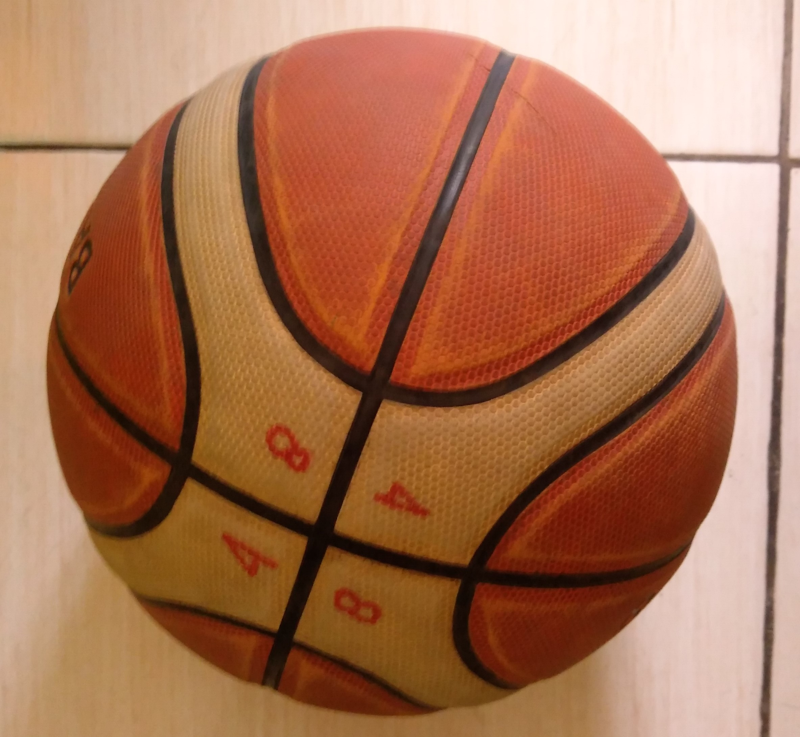

Lapangan
Lapangan bola basket biasanya berukuran
panjang 28,65 meter dan lebar 15,24 meter.
Ukuran lingkar tengah menurut standar NBA
adalah 3,66 meter, sedangkan jarak garis three
point dari ring basket adalah 6,72-7,24 meter.
Peraturan Permainan
Standar internasional permainan bola basket
adalah empat babak, dengan waktu yang dimiliki
oleh setiap babaknya adalah 10 menit (4×10
menit), dengan jeda waktu istirahat 10 menit.
Namun jika dilakukan dalam kompetisi NBA,
biasanya menggunakan format 12 menit per
babaknya (4×12 menit).
Jumlah Pemain
Jumlah pemain dalam permainan bola basket
adalah 5 orang dalam satu regu dengan
cadangan 5 orang.
Bola Basket

Bola Basket. Bahan: Kulit asli, kulit sintetis, atau
karet. Berat: FIBA 576 gram; NBA 650 gram.
Keliling bola: FIBA 74,9 cm; NBA 76 cm.
Ring dan Net Ring. Ukuran Ring: 18 inchi. Letak:
10 kaki dari lantai digantungkan pada papan 3,5 x
6 kaki, Pencatat Waktu, Seragam tim dan sepatu.
Wasit
Jumlah wasit dalam permainan bola basket
adalah tiga orang. Satu orang sebagai wasit
utama yang disebut referee, satu wasit berperan
sebagai asisten wasit disebut umpire, dan wasit
pencatat atau scorer.
Wasit Utama (Referee)
1. Memulai pertandingan dengan melakukan tip-off
di tengah lapangan.
2. Memastikan bahwa permainan berjalan sesuai
dengan aturan dan regulasi yang berlaku.
3. Tanggung jawab wasit berakhir segera setelah
pertandingan selesai tanpa adanya kontroversi
atau saat dia dia meninggalkan lapangan.
Wasit 2 (Umpire)
1. Melakukan pengawasan terhadap anggota tim
selama pertandingan berlangsung, meliputi
pemain, posisi pemain cadangan, staf, pelatih
dan yang lainnya.
2. Menjaga agar pertandingan berjalan lancar dan
kondusif.
3. Membantu wasit pertama dalam menentukan
pelanggaran atau tidaknya sebuah kejadian.
Wasit Pencatat (Scorer)
Tugas dan wewenang wasit pencatat (disebut
juga dengan wasit ketiga) sejatinya hanya
sebatas scoring saja yakni meliputi pencatatan
skor dan shot clock.